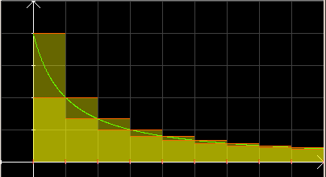

| Choisissez votre langue ! | Choose your language ! |
On s'intéresse ici à la situation suivante:
On considère une fonction f:ℝ+ → ℝ, que l'on suppose positive, continue et .
Dans ce cas la de terme général un=f(n) n∈ ℕ est elle-même à termes positifs décroissants.
La situation est illustrée par la figure ci-dessous:
On considère une fonction f:ℝ+ → ℝ, que l'on suppose positive, continue et .
Dans ce cas la de terme général un=f(n) n∈ ℕ est elle-même à termes positifs décroissants.
La situation est illustrée par la figure ci-dessous:
We are interested here in the following situation:
We consider a function f:ℝ+ → ℝ, which we assume positive, continuous and .
In this case the of general term un=f(n) n∈ ℕ is itself in decreasing positive terms.
The situation is illustrated by the figure below:
We consider a function f:ℝ+ → ℝ, which we assume positive, continuous and .
In this case the of general term un=f(n) n∈ ℕ is itself in decreasing positive terms.
The situation is illustrated by the figure below:

Nous allons examiner le lien entre la et la
\( \displaystyle \int_{0}^{+\infty}f(x)dx \)
Encadrement de l'intégrale par la série
Les résultats suivants sont des évidences par une simple considération de la figure: ci-dessus We will examine the link between the and the
\( \displaystyle \int_{0}^{+\infty}f(x)dx \)
Bounding the integral by the series
The following results are evidences by a simple consideration of the figure above:propriété 1
Pour tout entier naturel n on a
\( \displaystyle f(n+1)\leqslant \int_{n}^{n+1}f(x)dx\leqslant f(n) \)
property 1
For any natural number n we have
\( \displaystyle f(n+1)\leqslant \int_{n}^{n+1}f(x)dx\leqslant f(n) \)
Par addition d'inégalités du type ci-dessus et en utilisant la relation de Chasles pour les intégrales, nous obtenons :
propriété 2
\( \displaystyle s_{n}-f(0)\leqslant \int_{0}^{n}f(x)dx\leqslant s_{n-1} \)
property 2
\( \displaystyle s_{n}-f(0)\leqslant \int_{0}^{n}f(x)dx\leqslant s_{n-1} \)
où les sn désignent les de la série.
Cela dit si y désigne un réel positif quelconque si E(y) désigne sa partie entière, nous avons toujours
Cela dit si y désigne un réel positif quelconque si E(y) désigne sa partie entière, nous avons toujours
\( \displaystyle \int_{0}^{E(y)}f(x)dx\leqslant \int_{0}^{y}f(x)dx\leqslant \int_{0}^{E(y)+1}f(x)dx \)
de sorte que\( \displaystyle \lim_{y \to +\infty}\int_{0}^{y}f(x)dx~~existe~~\Leftrightarrow \lim_{n \to _infty}\int_{0}^{n}f(xdx)~~existe \)
Il résulte de tout cela que : where the sn denote the of the series.
That said, if y denotes any positive real if E(y) denotes its integer part, we still have
That said, if y denotes any positive real if E(y) denotes its integer part, we still have
\( \displaystyle \int_{0}^{E(y)}f(x)dx\leqslant \int_{0}^{y}f(x)dx\leqslant \int_{0}^{E(y)+1}f(x)dx \)
so that\( \displaystyle \lim_{y \to +\infty}\int_{0}^{y}f(x)dx~~exists~~\Leftrightarrow \lim_{n \to _infty}\int_{0}^{n}f(xdx)~~exists \)
It follows from all this that:propriété 3
Si la série de terme général f(n) , alors l'intégrale
\( \displaystyle \int_{0}^{+\infty}f(x)dx \)
converge également. En outre si s désigne la somme de la série f(0)+f(1)+ ... +f(n)+ ...
On a l'inégalité \( \displaystyle s-f(0)\leqslant \int_{0}^{+\infty}f(x)dx\leqslant s \)
property 3
If the series with general term f(n) , then the improper integral
\( \displaystyle \int_{0}^{+\infty}f(x)dx \)
is convergent as well. Furthermore if s denotes the sum of the series f(0)+f(1)+ ... +f(n)+ ...
We have the inequality \( \displaystyle s-f(0)\leqslant \int_{0}^{+\infty}f(x)dx\leqslant s \)
et réciproquement :
and conversely:
propriété 4
Si intégrale alors la série converge et sa somme s vérifie
\( \displaystyle s\leqslant \int_{0}^{+\infty}f(x)dx+f(0) \)
property 4
If the integral then the series converges and its sum s verifies
\( \displaystyle s\leqslant \int_{0}^{+\infty}f(x)dx+f(0) \)
En effet, les sommes partielles sn forment alors une suite et .
Naturellement tout ce qui précède s'applique (mutatis mutandis) aux séries qui commencent au rang 1 (ou plus) au lieu du rang 0.
Puis un encadrement des sommes partielles de la série :
Naturellement tout ce qui précède s'applique (mutatis mutandis) aux séries qui commencent au rang 1 (ou plus) au lieu du rang 0.
Encadrement de la série par l'intégrale
De \( \displaystyle \int_{i}^{i+1}f(t)dt\leqslant f(i)\leqslant \int_{i-1}^{i}f(t)dt \)Nous tirons par addition
\( \displaystyle \int_{1}^{n+1}f(t)dt\leqslant f(1)+...+f(n)\leqslant \int_{0}^{n}f(t)dt \)Puis un encadrement des sommes partielles de la série :
Indeed, the partial sums sn then form an and .
Of course all of the above applies (mutatis mutandis) to series that start at rank 1 (or more) instead of rank 0.
Then a bounding of the partial sums of the series :
Of course all of the above applies (mutatis mutandis) to series that start at rank 1 (or more) instead of rank 0.
Bounding the series by the integral
From \( \displaystyle \int_{i}^{i+1}f(t)dt\leqslant f(i)\leqslant \int_{i-1}^{i}f(t)dt \)We draw by addition
\( \displaystyle \int_{1}^{n+1}f(t)dt\leqslant f(1)+...+f(n)\leqslant \int_{0}^{n}f(t)dt \)Then a bounding of the partial sums of the series :
propriété 5
\( \displaystyle \int_{0}^{n+1}f(t)dt\leqslant f(0)+...+f(n)\leqslant f(0)+\int_{0}^{n}f(t)dt \)
property 5
\( \displaystyle \int_{0}^{n+1}f(t)dt\leqslant f(0)+...+f(n)\leqslant f(0)+\int_{0}^{n}f(t)dt \)
Et, en cas de convergence, un encadrement du reste :
And, in case of convergence, a bounding of the remainder:
propriété 6
\( \displaystyle \int_{n+1}^{\infty}f(t)dt\leqslant \sum_{i=n+1}^{\infty}f(i)\leqslant \int_{n}^{\infty}f(t)dt \)
property 6
\( \displaystyle \int_{n+1}^{\infty}f(t)dt\leqslant \sum_{i=n+1}^{\infty}f(i)\leqslant \int_{n}^{\infty}f(t)dt \)
Applications
Nous allons appliquer tout cela aux séries de terme général 1/ns où n désigne un entier ≥1 et s un rationnel quelconque.Nous avons déjà étudié ces cas, en particulier le cas n=1 ( ) dans cette page.
Un corollaire de ce qui précède est donc :
Applications
We are going to apply all this to the series of general term 1/ns where n designates an integer ≥1 and s any rational number.We have already studied these cases, in particular the case n=1 ( ) in this page.
A corollary of the above is therefore:
propriété 7
Si nous désignons par ln(x) la de la fonction 1/x qui s'annule en 1 (définie sur ]0,+∞[), c'est à dire
\( \displaystyle ln(x)=\int_{1}^{x}\frac{1}{t}dt \)
on a
\( \displaystyle \lim_{x \to +\infty}ln(x)=+\infty \)
property 7
If we denote by ln(x) la of the function 1/x which vanishes at 1 (defined on ]0,+∞[), that is to say
\( \displaystyle ln(x)=\int_{1}^{x}\frac{1}{t}dt \)
we have
\( \displaystyle \lim_{x \to +\infty}ln(x)=+\infty \)
Etant donné que pour s ≥ 1 on a
Nous obtenons en plus une majoration de la somme de la série de terme général 1/ns par s/(s-1).
\( \displaystyle \int_{1}^{+\infty}\frac{1}{x^{s}}dx=\frac{1}{s-1} \)
On obtient donc la preuve de la pour les valeurs non entières de s.Nous obtenons en plus une majoration de la somme de la série de terme général 1/ns par s/(s-1).
Given that for s ≥ 1 we have
We also obtain an upper bound of the sum of the series of general term 1/ns by s/(s-1).
\( \displaystyle \int_{1}^{+\infty}\frac{1}{x^{s}}dx=\frac{1}{s-1} \)
We therefore obtain the proof of the for non-integer values of s.We also obtain an upper bound of the sum of the series of general term 1/ns by s/(s-1).
|
Création Gilles Dubois - licence CC-BY-SA
Created by Gilles Dubois - licence CC-BY-SA
|
Septembre 2023
September 2023
|
Version mobile Jquery
Mobile Jquery version
|
|